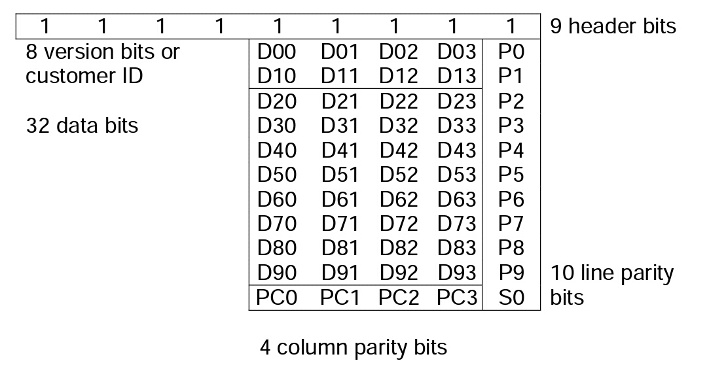
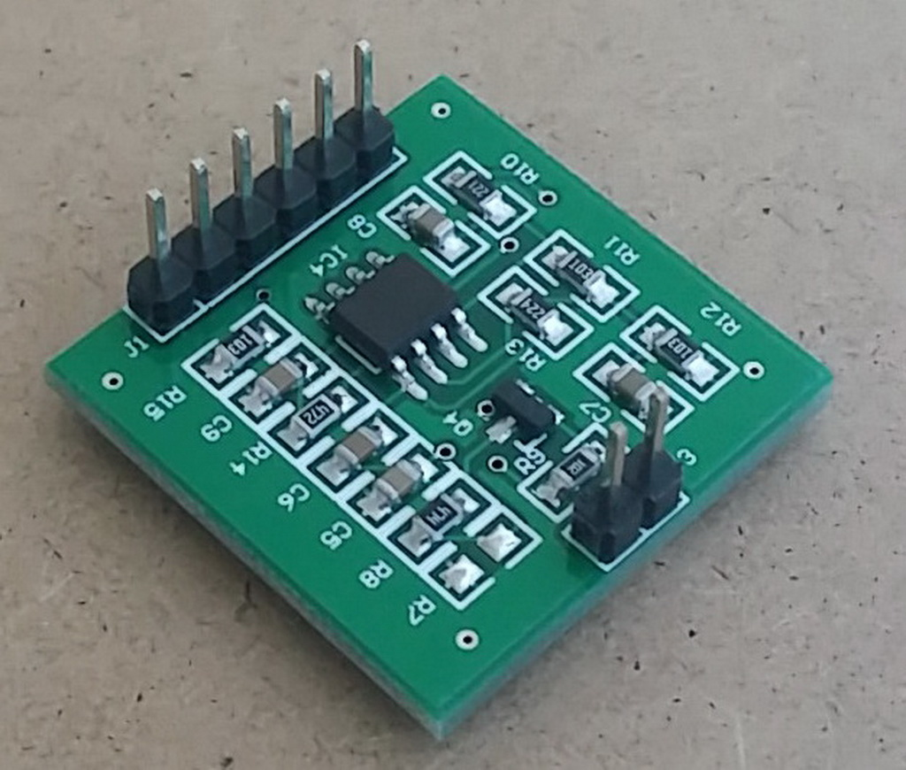
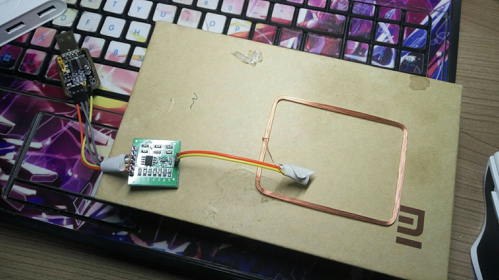

初探RFID--复制id卡
坑爹的小区，门禁卡只给发两个，再办的话15块钱一个，还是自己复制划算= =
准备
怎么识别卡的类型？
现在常用的卡一般都是ID卡或者IC卡。分辨的方法有两种：上面印数字的是ID卡，没有就是IC卡；透过光看线圈是方形的细条就是IC卡；是很粗的圆环或者比较粗的、带弧度的方形就是ID卡。小区门禁卡是钥匙扣，上面刻着10位数字，可以看出是ID卡。 （官方叫做EM4100卡，国内一般是山寨的TK4100卡，哈哈其实这个不重要）
ID卡有几个特性：
1.工作在125kHz频率下，也叫做低频卡
2.存储空间只有64bit，而且只读，只能存储一个固定的卡号，也就是ID这个名字的由来
3.无论形状是卡还是钥匙扣，上面都会印卡的id。这是获得卡号的最简单方法
要想复制，最简单的办法就是找一个相同的卡，写入同样的内容。但是ID卡是只读的，不可能自己写入内容。这时就需要了解一下卡的工作原理，然后想办法模拟这个过程。
EM4100卡内部存储结构
ID卡存储的内容包括几个部分：
1.首先是9个1，作为ID卡的识别符。卡片通电以后循环发送卡片上的所有数据，读卡器读到连续的9个1就知道接下来卡片要发送数据了；接下来每4bit(1个16进制数)都会有1位偶校验(图中的P0~P9)，即4位加起来和是偶数，校验位是0，否则是1。
2.识别符后紧接着是8bit版本号，可以表示0x00~0xff，这个一般的读卡器都不读，也不印在卡片表面，忽略。
3.之后是32bit ID号，也就是8位16进制数，或者0~4294967295的十位十进制数。卡片表面印的10位数就是这十位十进制数。有的卡片上还会印一个带逗号的8位数，是把16进制下倒数第5,6位和后4位分别转换成10进制，中间加逗号形成的。 举个栗子：我的一张卡上印着0006381769 097,24777 。左边的十位转换成16进制就是0x006160C9，其中0x61=97 0x60C9=24777 中间加上逗号就是097,24777
4.最后有4位列校验位和一个停止位。列校验也是偶数校验。停止位永远都为0。
所以选什么卡呢
满足低频卡(125kHz)而且可写的卡一般是用T5557或者EM4305，其中T5557有330bit空间，EM4305有512bit。只要在其中某一块写入要复制ID卡的这64bit数据即可。但要注意的是这两种卡都比较高级，并不是所有空间都是存数据的，有存储配置的地方，还有存储密码的地方。使用是注意存储位置还有关闭加密功能。
购买
上某宝搜“ID卡复制器”，都是80+… = = ，买不起啊。经过刻苦努力的搜索，发现一款只卖15元的EM4305读写模块。为啥这么便宜呢，看看看看，这简直三无产品啊= = 没有外壳，也不能接USB，插电脑。幸好偶作为一个EE学生手头有大量闲置TTL转USB板子，就果断买了。然后EM4305卡2.5一张，也不贵。
开工！
EM4305卡有16个PAGE, 每个PAGE有32bit，一共512bit。其中3,5~13是存储数据的，4是存储设置的。之后再写计算的过程= =总之计算好了就可以写数据了。
把天线两头烧一下接两根导线出来插到模块上，然后把模块的VCC, GND, Rx, Tx都接到TTL上，杜邦线落在学校了，尴尬，就可以写入数据啦。

参考资料
EM4305 Datasheet
EM4100 Datasheet
后记
后面会写ID号到写在EM4305上的数据的计算方法。 已经完成传送门
顺便开发个安卓程序用otg写卡也是极好的。 已经完成传送门
EM4305也可以写入多张ID卡的数据以实现一卡刷多个门 传送门